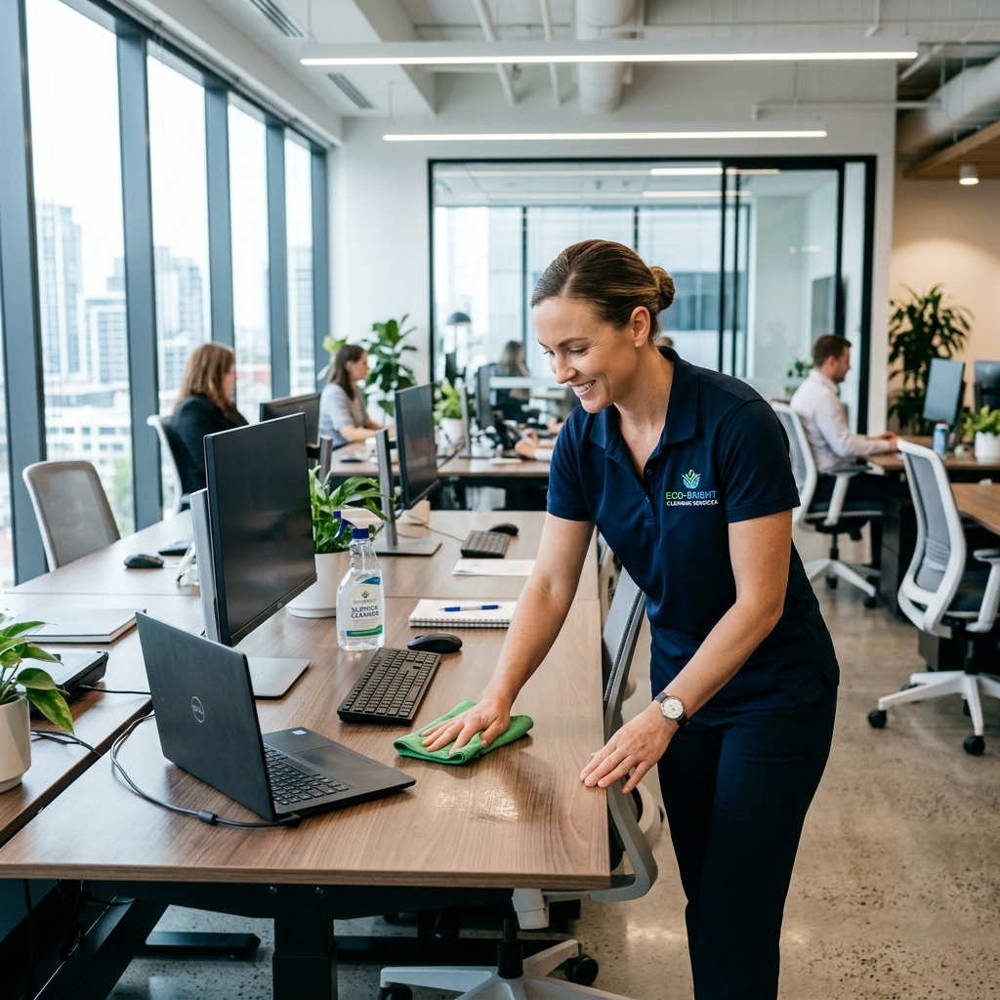

Pulizie Trasloco & Straordinarie
Consegna o ingresso nella nuova casa: tutto perfetto, senza stress.
Per ogni momento straordinario
Ci sono momenti in cui la casa richiede una pulizia fuori dall'ordinario: un trasloco, la restituzione di un appartamento in affitto, l'arrivo di ospiti importanti o l'organizzazione di un evento.
Il nostro servizio di pulizie straordinarie è pensato per questi momenti: intervento rapido, approfondito, con risultati garantiti. Puoi chiamarci anche con breve preavviso per le urgenze.

Trasloco & StraordinariePer Quali Situazioni
Interveniamo in tutti i momenti in cui hai bisogno di una pulizia straordinaria.
Ingresso Nuova Casa
- Pulizia profonda pre-abitazione
- Igienizzazione completa
- Sanificazione bagni
- Pulizia armadi e cassetti
- Lucidatura pavimenti
Fine Affitto
- Pulizia per restituzione cauzione
- Eliminazione segni d'uso
- Pulizia forni e frigo
- Ripristino stato originale
- Pulizia terrazzi/balconi
Pre/Post Evento
- Allestimento pulizia pre-festa
- Pulizia post-evento rapida
- Smaltimento rifiuti
- Ripristino ambienti
- Disponibilità weekend
Urgenze
- Intervento rapido 24-48h
- Danni da allagamento
- Pulizia post-sinistro
- Reperibilità emergenze
- Disponibilità festivi
Domande sulle Pulizie Straordinarie
Sì, cerchiamo sempre di accomodarci alle urgenze. Nella maggior parte dei casi riusciamo a intervenire entro 24-48 ore dalla richiesta. Chiamaci e verifichiamo insieme la disponibilità.
Sì, molti nostri clienti ci chiamano proprio per questo. Una pulizia professionale profonda prima della riconsegna delle chiavi aumenta notevolmente le probabilità di recuperare la cauzione integralmente.
Assolutamente sì. Interveniamo sia prima degli eventi per preparare gli spazi, sia dopo per il ripristino. Siamo disponibili anche la domenica e nei giorni festivi per le urgenze.
Hai bisogno di noi adesso?
Chiamaci subito o invia una richiesta: troveremo la soluzione giusta per te.